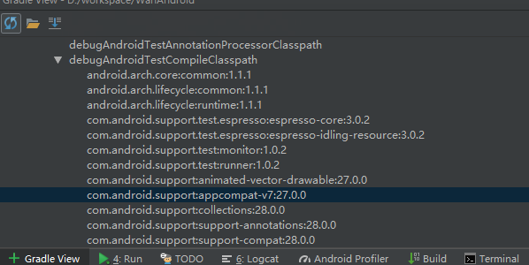

问题：
今天在项目中引入
implementation 'com.android.support:appcompat-v7:27.0.0'
项目报All com.android.support libraries must use the exact same version specification (mixing versions can lead to runtime crashes错误
看意思大概是引用 com.android.support 包冲突了，版本号要保持一致，但是可能我们自己新建的项目的com.android.support包版本号要高一些，一些第三方的库的com.android.support可能没有及时更新support库，就会出现这个错误。
网上解决方法：（同样的适用于其他的依赖冲突。）
- 修改自己项目中的com.android.support的版本号，与所依赖的库版本号一致，但是当我们依赖的库中的com.android.support版本号有好几个版本就不行了。（不推荐）
- 依赖第三方库时候排除掉对com.android.support包的依赖，这样自己的项目随便依赖什么版本都可以，但是这种方法需要你先找到哪些库存在冲突
寻找问题根源：
自行下载插件 gradle view，或者用AS自带plugs下载插件，使用GradleView面板看冲突版本

可以看到com.android.support 有两个版本，分别是27.0.0和28.0.0，可想而知这里的的28.0.0版本肯定是第三方依赖添加的。
dependencies {
implementation fileTree(include: ['*.jar'], dir: 'libs')
implementation 'com.android.support:appcompat-v7:28.0.0'
testImplementation 'junit:junit:4.12'
androidTestImplementation 'com.android.support.test:runner:1.0.2'
androidTestImplementation 'com.android.support.test.espresso:espresso-core:3.0.2'
//retrofit
implementation 'com.squareup.retrofit2:retrofit:2.4.0'
implementation 'com.squareup.retrofit2:converter-gson:2.4.0'
implementation 'com.squareup.retrofit2:adapter-rxjava:2.4.0'
implementation 'com.squareup.okhttp3:logging-interceptor:3.11.0'
//rxjava
implementation 'io.reactivex.rxjava2:rxjava:2.2.2'
implementation 'io.reactivex.rxjava2:rxandroid:2.1.0'
//util
implementation 'com.blankj:utilcode:1.21.0'
implementation 'me.yokeyword:fragmentation:1.3.6'
//butterknife
implementation 'com.jakewharton:butterknife:9.0.0-rc1'
annotationProcessor 'com.jakewharton:butterknife-compiler:9.0.0-rc1'
}
这里是我项目暂时引用的依赖，猜测可能是utilcode，fragmentation或butterknife中的一种，然后我就在github上分别查看了下项目引用的supportLibrary版本号，butterknife引用的是28.0.0.这就找到了问题的根源。
最终解决方案：
第一种：给dependencies配置transitive为false，这样就会以你当前依赖的版本为准。但是这样使用后可能会导致第三方依赖有问题。
...
configurations.all {
transitive = false
}
...
dependencies{
}
我这样尝试坐了下，发现Butterknife在项目中出现了些问题。所以最好不要这么做
于是我采用了下面这种方法
第二种：
android {
compileSdkVersion 28
...
}
...
dependencies {
...
implementation 'com.android.support:appcompat-v7:28.0.0'
...
}
将support提升至28.0.0完美的解决了问题
感受：
遇到问题不用慌，先找出现问题的根源，凡事有因必有果，有果必有因，然后再一步一步尝试，最后必然能找到解决方案。